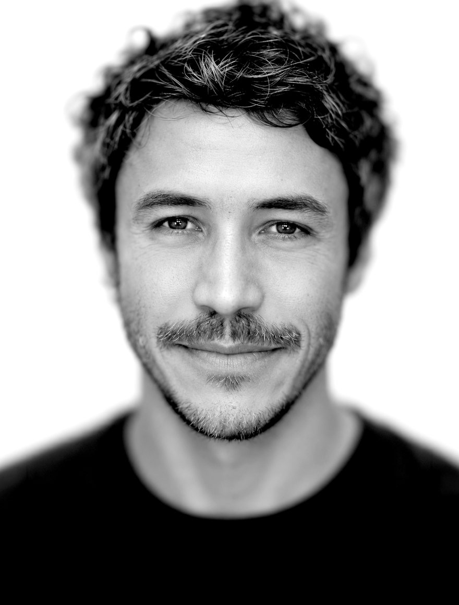

This is the candidate I work for. Twenty years of global brand leadership — Apple, Samsung, Airbnb — born in Colombia, built in the US, fluent in both.
Senior creative leader for brands being invented — or reinvented — for the AI era. Builds global ideas that feel locally true, and the teams, operating models, and creative cultures that don’t exist yet.

Leads creative for global expansion across LATAM, US Hispanic, Canada, EMEA, and APAC. Built the multidisciplinary in-house team — design, art direction, writing, motion, UX. Helped launch Airbnb Services and the reimagined Experiences, and designed the AI operating model for a world-class creative org.
Led the global Samsung Mobile creative business from New York: a 50-plus person team, launches across the Galaxy ecosystem, multimillion-dollar productions across the US, UK, Germany, Japan, Brazil, Mexico, and Australia — in daily partnership with Seoul.
Won the global Infiniti pitch, then built and led the worldwide creative team — connecting one brand vision to launches, campaigns, and retail across markets.
Built Media Arts Lab’s LATAM creative hub for Apple from zero, embedded in Apple’s Miami office: iPhone, iPad, and Apple Watch launches and @apple content across Mexico, Brazil, Colombia, Argentina, and Chile, with Marcom leadership in Cupertino.
Verizon’s flagship Destination Stores from concept through deployment — UX, motion, software, retail. Pitched and won Clinique for the network; led Nike Running and Yoga.
“Had the pleasure of working/partnering with Carlos for two years. You won’t find anyone more committed to simplifying the complicated quite like Carlos. A creative leader that sees past the chaos.”
“Carlos is a man of great tastes, be it a fine meal, or a finely tuned creative idea. He has an eye for beautiful things and is always willing to roll up his sleeves and join the team in elevating the work to match his vision.”